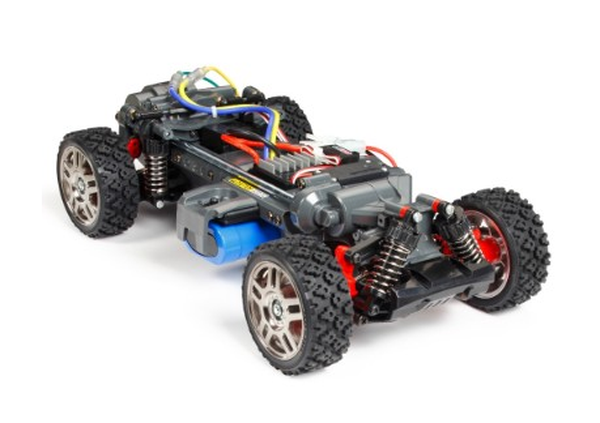

タミヤ MF-01X

引用元画像：タミヤ公式サイト
📋 基本情報
| メーカー | タミヤ（Tamiya） |
|---|---|
| 機種名 | MF-01X |
| 型番 | 58614（スズキ ジムニー JB23）など |
| 発売時期 | 2015年 |
| 生産状況 | 生産終了品 |
| カテゴリー | ラジコンカー（1/10スケール 電動RCカー） |
| サブカテゴリー | Mシャーシ（コンパクト4WD・ラリー仕様） |
📏 シャーシスペック
| 全長 | 347mm |
|---|---|
| 全幅 | 170mm |
| 全高 | 215mm |
| ホイールベース | 210mm（S）/ 225mm（M）/ 239mm（L） |
| トレッド | フロント/リヤ 138mm |
| タイヤ幅/径 | 27mm/69mm（ラリーブロック） |
| フレーム | 左右分割式モノコック+ギヤボックス一体化 |
⚙️ 駆動系
| 駆動方式 | シャフトドライブ4WD |
|---|---|
| デフギヤ | 前後とも3ベベル |
| ギヤ比 | 9.5:1 |
| モーター | 540タイプ（Torque-Tuned、リヤエンド搭載） |
| ESC | TBLE-02S（標準装備） |
🔧 サスペンション
| 形式 | 4輪ダブルウィッシュボーン独立懸架 |
|---|---|
| ダンパー | フリクションダンパー（前後） |
| ステアリング | ベルクランク式 |
💡 特徴
Mシャーシ初の4WDモデル
- オンロードからダートまで路面を選ばず走りが楽しめるコンパクトサイズの4WDシャーシ
- 強度の高い左右分割式のモノコックフレームは、ギヤボックスまで一体化
- 組み立てやすさも追求した設計
3段階調整可能なホイールベース
- リヤエンドにモーターを搭載し、ギヤで後輪に、プロペラシャフトで前輪にパワーを伝達
- 前後の密閉式ギヤケース内にはデフギヤを装備してスムーズなコーナリングを実現
- 車体のほぼ中央に走行用バッテリーをセットして重量バランスも良好
汎用性の高さ
- 既存のMシャーシボディと互換性あり
- 3セクション構造によりホイールベース変更が可能
- 車高調整も可能
🔧 ぽすとそに工房での修理実績
修理難易度
★★★★★（非常に難しい、古いシャーシなのでパーツが見つからない可能性が高いです）
よくある故障・注意点
- 生産終了品のため、パーツ入手が困難
- モノコックフレームの割れ（特にフロントアクスル周辺）
- プロペラシャフトの摩耗
- フリクションダンパーのバウンド（オイルダンパーへの交換推奨）
修理のポイント
- モノコックフレームの割れは接着剤＋FRP補強が有効
- フロントアクスル周辺は1150ベアリングで保護されているが、経年劣化に注意
- プロペラシャフトは3種類（210/225/239mm）あり、ホイールベース変更時は別途購入が必要
- Mシャーシ用オイルダンパーに交換可能（性能向上）
その他の特徴
- Mシャーシ初の4WDモデル（2015年発売）
- ラリーブロックタイヤでオンロード・オフロード両対応
- M-05RAからの流用パーツあり
- 軽量で頑丈なモノコック構造